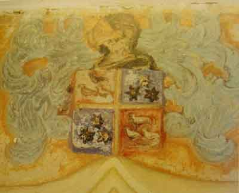

DOCUMENTS DIVERS
PUBLIÉS (2/3)
DOCUMENTS DIVERS
PUBLIÉS (2/3)
LE FIEF DE GOURFALEUR
Référence : Notices, Mémoires et
Documents ; t. 20 p. 59 à 70 ; 1902
Provenance : Archives Départementales de la Manche
[Abandon du fief par Jehan Ier de GOURFALEUR au profit de Jehan de CAUMONT entre les années 1442 et 1446].
Il n'apparaît pas que Jehan de CAUMONT le nouveau propriétaire du Fief de Gourfaleur se soit qualifié seigneur de cette terre noble, non plus qu'Ecuyer ou Noble Homme. En 1422, le roi Henri V d'Angleterre l'avait nommé Changeur de la Monnaie de Saint-Lô, en même temps que trois autres bourgeois de cette ville, Martin VARROC, Guillaume BOUTEBOSC et Roger ROUXELIN. En 1437, il était maître de cet atelier et Sieur du Mesnil Rouxelin (Arch. de N.-D. de Saint-Lô, registre des rentes de 1437). Plus tard, il occupa un poste de judicature car le 25 janvier 1444, il signait un mandement de Hue SPENCER, Bailli du Cotentin, daté de Saint-Lô. Trois ans après, le 16-02-1447, il faisait partie ainsi que sa femme et Jehan, son fils aîné "de la Confrairie de Saint Jean aux Chapiaux" et payait un salut d'or pour entrée.
Lui ou son fils aîné Johan de CAUMONT, car on ignore la mort de l'ancien maître de la Monnaie, fut l'un des trésoriers de l'Eglise Notre Dame de Saint-Lô qui firent construire en 1464 la tour méridionale de cette Basilique ; l'inscription gravée sur la façade du monument est là qui en témoigne. Mais si ni l'un, ni l'autre ne fut reconnu noble dans la sergenterie de Saint-Lô, par MONTFAULT, Johan IIe du nom profita des dispositions de l'ordonnance de 1470, par laquelle les roturiers détenteurs de Francs Fiefs furent anoblis moyennant finances. Il porte en effet le titre d'Ecuyer et de Seigneur de Gourfaleur dans un acte de cette même année inséré dans le Cartulaire de l'Abbaye de Saint-Lô.
Richard de CAUMONT, écuyer, lieutenant à Saint-Lô du Vicomte de Carentan succéda au précédent. Il figure à la date du 20 juin 1474 parmi les associés de la Charité de St Jehan avec les titres d'Ecuyer et de Seigneur de Gourfaleur. Il semble n'avoir point laissé d'hoirs mâles car, d'après une sentence rendue le 16-12-1521 par le Bailliage de Carentan, dame Jehenne de CAUMONT était Dame de Gourfaleur ; elle était alors placée, probablement à cause de minorité sous la tutelle de Me Robert de CAUMONT curé du Mesnil Rouxelin, un de ses proches.
Jeanne de CAUMONT épousa, peu d'années après, noble homme Guillaume de CLINCHAMPS, qui, aux droits de sa femme, contestait à l'Hôpital de Saint-Lô tout ensemble la dîme et la grange dîmeresse que cet établissement charitable possédait à Gourfaleur par suite de la donation de Jehan LE JOLIVET, écuyer, sieur d'Audouville. La Dame de Gourfaleur avait une sœur, Perrette de CAUMONT qui épousa Me Pierre LE SOUDAIN, monnayer de la Monnaie de Saint-Lô. Celle-ci aux droits de ses ancêtres fut reçue en 1530, tailleresse en cette monnaie.
Mme de CLINCHAMPS mourut sans enfant, car on trouve, en 1540 noble homme Jehan de CAUMONT, écuyer, titré seigneur de Gourfaleur sans qu'on sache le degré de parenté qui les unissait. Un arrêt des Grands Jours de Bayeux, tenus le 1er octobre de cette même année le condamne à payer 2000 livres tournois à Noble Homme Jehan LE JOLIVET, seigneur d'Audouville. Le sieur de Gourfaleur se pourvut devant le Parlement à Rouen et obtint des délais de payement. Il parvint à se libérer ; nous le voyons en effet comme tenant le Fief de Gourfaleur d'après l'aveu que l'Evêque de Coutances, Etienne MARTEL, baron de Saint-Lô, rendit au Roi en l'an 1553. Ce fut lui qui, avec un grand nombre de notables de la cité et des environs, se prononça, en l'an 1555, pour la création d'un siège de Vicomté. On le retrouve, le 04-07-1584, qui constituait, devant les tabellions de Saint-Lô une rente de 8 écus d'or sol au profit de Me Jehan ROUXELIN, seigneur de Caheuney, lieutenant à Saint-Lô du Bailli de Cotentin. Toutefois, sa mort dut advenir peu de temps après puisque, dans un acte du 29-04-1588, demoiselle Marguerite de CAUMONT, femme de Jehan LE BAS, fils Jehan est dite "fille de feu Noble Homme Jehan de CAUMONT, seigneur et patron (honoraire) de Gourfaleur".
Il laissa deux fils Jehan et Pierre de CAUMONT. Jehan de CAUMONT, 3e du nom, recueillit dans la succession de son auteur la Seigneurie de Gourfaleur. Il n'en procéda pas moins en justice avec son puîné au sujet de partage de certaines rotures, ainsi que cela ressort d'un acte passé devant les tabellions de Saint-Lô, le 15-10-1588. Roissy le maintint noble de même que Pierre, son frère et non son oncle comme l'indique à tort le sieur de Mesmes. Me Melchior de CAUMONT leur parent était alors curé de Gourfaleur. Nous ignorons l'époque du décès de Jean de CAUMONT dont l'héritière fut Delle Judith de CAUMONT, sa fille laquelle était mariée en 1640 "à un juge de la Justice de Cérences" suivant le rôle de la noblesse du Cotentin. Elle épousa en secondes noces Me Jean PIGNARD, sieur du Hautboscq, avocat au siège de Cérences et reçut, le 20-10-1657 de Pierre BÉRON ou de BÉRON, sieur du Jardin et de Gourfaleur, une somme de 1100 livres tournois à compter sur les deniers dont il lui était redevable "à cause de la dite seigneurie de Gourfaleur et demeurée en ses mains pour son assurance". Cette somme servit à payer le prix de certains héritages sis à Cérences et achetés 2000 livres tournois par Me PIGNARD et sa femme.
De ce qui précède il
résulte évidemment que le Fief de Gourfaleur avait
été vendu soit à Daniel de BÉRON, soit
à son fils Pierre peut-être par Jean
de CAUMONT lui-même, ou par ses
héritiers,
mais sûrement à cause des affaires embarrassées
du sieur de Gourfaleur ; les termes du contrat du 20-10-1657 le
laissent suffisamment entendre.
Référence : Bibliothèque Nationale,
Quittances, t.81, n°4938, dans Chroniques du Mont Saint Michel
(1343-1468) publiées par Siméon Luce ; Paris 1879
réimpression de 1966
Provenance : Bibliothèque de l'Université Mc
Gill, Montréal
1444 (N. ST.), 27 janvier,
Saint-Lô
Mandement de Hue Spencer, bailli du Cotentin, relatif à une
somme de 1500 livres tournois à lever sur les habitants du dit
bailliage de Cotentin :
" [...] En tesmoing de ce, nous avons seellé ces presentes du
petit seel aux causes du dit bailliage, presens à ce maistre
Mathieu Boutebosc, Jehan Farry et Richart Gyhommars." [Signé]
J. de
Caumont.
Référence : Annuaire des Cinq
Départements de la Normandie, 98e année
(1931), Congrès de
Saint-Lô (1930) à partir de la p.85 ; R. Lecler
Provenance : Archives Départementales de la Manche
p.85 : Dans un inventaire manuscrit
d'un registre de 1437 de la fabrique de l'église, on
relève les détails suivants qui situent bien la place
de l'hôtel de la Monnaie. "Trentre sols tournois sont dus au
Trésor de notre Dame sur lostel et mesnage detenu et
occupé par Jehan de
Caumont
maistre des monnoies du don de Robert Le Rossignol pour tourner et
convertir a lusage du vin qui est ordoné a estre
distribué en lad. église Nostre Dame le jour de Pasques
ès gens qui auront prins le corps. Nostre Seigneur a la grand
messe en lad. église, icelle rente assise sur led. manoir
assis en la paroisse Ste Croix en la rue Nostre Dame, bute a la rue
Nostre Dame ou bute a l'église Nostre Dame et ès mur de
la forteresse, laquelle rente fut constituée le 12 janvier
1377. Ledit manoir fut auparavant à Raoul Osouf et
après à Pierre Chaffart, et le tient à
présent (1437) ledit de
Caumont".
[...]
Lors de l'enquête faite en 1497 au sujet de la Chapelle du
Rosaire, on reconnut la nécessité d'élever un
pilier en partie sur certain héritage qui fut à
Jehan de
Caumont, et qui alors servait de
demeure à Richard Bazire, maître des monnaies.
[...]
Personnel de la Monnaie
Maîtres : Le maître
particulier d'une Monnaie, par opposition aux Généraux
Maîtres de la Cour des Monnaies, exploitait un atelier soit en
régie "en la main du Roi", lorsqu'aucun amateur ne se
présentait, soit à l'entreprise par voie d'adjudication
à la chandelle ou de gré à gré. Dans la
seconde hypothèse, un bail était conclu avec le
Maître. Le bail déjà passé, un tiers
pouvait encore renchérir et se substituer. Le concessionnaire
fournissait un cautionnement, des répondants ou cautions, ce
que l'on appelait des "plèges". Une frappe à l'essai,
"espreuve" leur était imposée. Le profit que le
maître retirait de son atelier était servi
intégralement au roi pendant deux mois ; il était
ensuite au Maître, sauf abandon d'une somme prévue par
annuités. Enfin le Maître s'engageait à fabriquer
un nombre fixé de marcs.
Ce n'était pas toujours le même maître qui
fabriquait la monnaie d'or et la monnaie d'argent ; il existait donc,
dans certains ateliers - et le fait s'est présenté pour
Saint-Lô - le maître particulier de l'or, et le
maître de l'argent.
Conformément à l'esprit des temps féodaux,
l'office de maître, comme certains autres d'ailleurs fut
longtemps héréditaire. En cas d'incapacité, les
héritiers, femme ou enfant, déléguaient leurs
droits, le maître également, s'il mourait au cours
d'exercice, transmettait sa charge et ses droits.
p.94 : Les gens riches de Saint-Lô et des alentours se
procuraient à prix d'achat quelle que fût leur
profession une charge de monnayer, charge transmissible par voie
d'hérédité directe et même
collatérale, parce que cette dignité, toute
honorifique, conférait quelques avantages, entre autres le
port de l'épée et certaines immunités
d'impôts.
Maîtres :
n° 20 - Jehan
I de Caumont (1425)
n° 21 - Jehan
I de Caumont et Jehan Marcel
(1426)
n° 22 - Jehan
I de Caumont (1427)
n° 24 - Jehan
I de Caumont (1431-32 et 1437)
En 1470, Jehan de
Caumont, escuier, fut
délégué de la ville de Saint-Lô aux Etats
de Normandie réunis à Caen. Il reçut X livres
par jour pour XX jours de vacation (réf : Etats provinciaux de
Normandie, H. Prentout 1927)
n° 25 - Jehan Ferry et Jehan
II de Caumont le jeune (17-11-1446 ;
15-07-1447)
Gardes :
n° 26 - Jehan
III de Caumont (avant le 15-05-1515)
Prévosts :
1573 - Pierre le Soudain. Fils de
Pierre, appartenait à une vieille famille de monnayers et de
protestants saint lois. Originaire de la Meauffe, il épousa
Perrette de
Caumont fille de monnayer et de
Guillemette Loyer. Il en eut trois fils : Pierre, Thomas et Jean
mentionnés dans des titres de 1530, 1570 et 1580
p. 124 : La famille des Le Soudain paraît se rattacher à
celle des Caumont dont un
membre était Maître de la Monnaie dès 1425. Des
de
Caumont étaient en 1506
seigneurs du Mesnil Rouxelin dont était curé à
l'époque un Le Soudain.
Référence : Blasons du Clos du Cotentin ; Université Inter-Ages de
Basse Normandie, antenne de Cherbourg ; Éditions Charles Corlet,
Presses Universitaires de Caen
Provenance : Archives Départementales de la Manche
p. 135 Rauville-la-Place, Presbytère

Des armoiries peintes ont été sculptées en relief au-dessus d'une porte inférieure en accolade de ce presbytère bâti ou restauré au XVIIe siècle par Jean-Baptiste de Caumont (Famille de Caumont, anoblie en 1470)
Écartelé d'argent ;
chargé aux 1er et 4e quartiers de trois merlettes de sable ;
aux 2e
et 3e
d'une
quintefeuille (alias trois) de gueules [dessin des armoiries]
Ce blason armorié, timbré d'un casque morné
(visière abaissée) pose problème. Dans chaque
quartier de cet écartelé, les meubles (ici, merlettes
et étoiles à 6 raies) n'ont pas la disposition 2 et 1
habituellement rencontrée en héraldique. S'agit-il donc
bien des armes de famille de
Caumont ?
Référence : Mémoires de la
Société des Antiquaires de Normandie, année
1834, t.VII et t.VIII pour la 2ème
partie
Provenance : Archives Départementales de la Manche
Abbaye de Saint Laurent de Cordillon, diocèse de Bayeux
n°57-62 : aveu rendu en 1475
à Demoiselle Jehanne de Couvert, veuve de Jean de Caumont,
écuyer, par Colin Mordrac, du tennement
de Jean Samedy comme aîné dudit fief.
Prieuré de Fontenay-le-Pesnel, diocèse de Bayeux
n°17 : Jean
de Caumont vend à l'abbé de Fontaine
Daniel
en 1257 une mine de froment de rente à prendre sur une masure
située à Fontenay devant la porte de Blosseville (le
sceau brisé).
Prieuré du Plessis Grimould, diocèse de Bayeux, Saint Martin de Sallen
n°460 : Richard de Bois Daniel
donne en 1226 au prieuré du Plessis pour le service de ses
infirmes tout le tenement fieffé à Guillaume
de Caumont pour diverses rentes et
redevances payables au
Bois Daniel, et par cette même charte, il confirme la donation
de 7 acres de terre faite par Raoul de Bois Daniel.
Référence : Saint-Contest, Histoire de la paroisse ; Abbé Élie ; 1901, réédition Res Universis, Paris 1992
Manoir des de Caumont, sieurs du Tremblé (p.54)
Il existe encore un autre manoir
à Saint-Contest qui était habité aux XVIe et
XVIIe siècles par les de
Caumont, sieurs
du Tremblé. Il est situé sur le bord du chemin qui
conduit de Saint-Contest à Mâlon et borné au midi
par le chemin de Saint-Contest à la Folie.
Cette terre des sieurs de
Caumont,
où était situé le manoir qu'ils habitaient aux
XVIe et XVIIe siècles, n'était autre que le fief
donné par Vautier d'Aigneaux, seigneur de Saint-Contest,
à Barbery, en 1211. Plus tard il fut " vendu et
aliéné aux ventes ecclésiastiques ", [...] " et
acheté par les sieurs de
Caumont.
"
Voici les noms de quelques-uns des
possesseurs de ce manoir :
Gilles de
Caumont. Dans le cartulaire
de
l'abbaye d'Ardennes, il existe une pièce intitulée : "
Échange devant les Tabellions de Saint-Lô entre
Gilles de
Caumont, écuyer, et
Jean de
Caumont, l'aîné,
seigneur du Tremblé, son cousin germain, de son droit à
la succession de son père et à celle de Jacques de Caumont,
curé du Mesnil-Rousselin, leur oncle,
contre un manoir et jardin, sis à Saint-Contest. 1522
".
Jacques de Caumont, fils Gilles, épousa en 1555 dlle Claude Lesueur dont il eut deux enfants : Pierre et Jacques.
Pierre de Caumont, fils Jacques, épousa demoiselle Jeanne de Maimbeville dont il eut deux enfants : Jacques et Pierre.
Pierre de
Caumont, fils Pierre,
épousa en 1642 demoiselle Gabrielle Marc dont il eut treize
enfants, de 1642 à 1660. Voici leurs noms tirés des
registres de baptêmes de la paroisse de Saint-Contest :
Jacques, Françoise, Marguerite, Guillaume, Jean (1), Marie,
Anthoine, Adrien, Anne, Charles, François, Catherine et
Jeanne.
Pierre de
Caumont mourut à
Saint-Contest en 1665, et fut inhumé le vendredi 1er mai, dans
l'église, en sa chapelle Saint-Sébastien.
Jacques de Caumont, fils aîné de Pierre, épousa en 1666 Damoiselle René le Conte, dont il eut douze enfants de 1667 à 1685. Voici leurs noms tirés des registres de baptêmes de la paroisse : Gabrielle, Nicolas, Jean-Baptiste, Louize-Colombe, Léonard, Catherine, Gabriel, Anne, Françoise, Nicolas, Anne et Jean.
Nous voyons y apparaître, pour la première fois, le nom des de Caumont, sur les registres de la paroisse, dans une " Liste des Communians à la Pâque de 1587 ". Cette famille de Caumont y est inscrite pour le nombre de douze communiants. En 1648, 26 septembre, et en 1659, 6 juin, nous trouvons dans les registres de la fabrique des contrats d'échange, faits pour les obits, entre frère Michel Regnauld, prieur-curé de Saint-Contest, et Pierre de Caumont, sieur du Tremblé, au nom de l'église de Saint-Contest.
La propriété des de Caumont fut vendue le 27 juillet 1687. " Damoizelle Gabrielle Marc, lisons-nous aux archives de la fabrique, veufve de Pierre de Caumont, Jacques de Caumont, escuier, tant en son nom que comme procureur de Me Jean de Caumont, chanoine au Sépulcre de Caen, et Charles de Caumont, escuier, ont vendu à maistre Nicolas du Mouchet, un entretenant de maisons et héritages scitués en la paroisse de Saint-Contest, consistant en plusieurs maisons, cour et jardin de terre en labour et plant, un petit bois taillis dessus, estant le tout en une seule et mesme pièce et entretenant, jouxte d'un côté le chemin tendant de Caen aux Buissons, et d'autre costé, Monsieur de Saint-Contest, le sieur de la Roulière-Bouvet et les héritiers Jean Niart, chacun en partie ; butte d'un bout par devant, sur le chemin ou sente tendant de Mâlon à l'église de Saint-Contest et le sieur le Coq, advocat, chacun en partie. Le tout contenant quarante et une acre ou viron, par le prix de dix huit mille cent livres ".
Le dernier acte inscrit sur les registres de la paroisse, concernant les de Caumont, est en date du 16 février 1688 : " Moy soussigné Jacques de Caumont, escuyer, sieur du Tremblé, de la paroisse de Saint-Contest, déclare m'opposer à la Quérémonie que l'on prétend jeter dans ladicte paroisse, pour avoir révélation contre certain curé malfaicteur du diocèse de Bayeux, ayant entendu dire quelques faicts contre ledict curé dans ma maison. " Fait ce 16 février 1688. Signé : de Caumont ".
A partir de cette date nous ne retrouvons plus le nom des sieurs de Caumont mentionné dans les registres. Cependant à la même époque, deux autres membres de cette famille signent comme parrains à plusieurs baptêmes des enfants de Pierre et de Jacques. C'est d'abord " Noble et discrepte personne Me Jean-Baptiste de Caumont, escuyer, prêtre chanoine de l'église cathédrale de Coutances ", et ensuite " Noble homme Jean de Caumont, chanoine au Sépulcre de Caen. "
Voici tirées de la " Recherche
de la noblesse ", de Chamillart, les armoiries des de Caumont,
sieurs du Tremblé, de Saint-Contest.
Elles portent : Écartelé d'argent, chargé au 1er
et 4e quartier de trois merlettes de sable, au 2e et 3e d'une
quintefeuille de gueules.
Notes :
(1) Jean de Caumont,
fils de Pierre et de Gabrielle Marc, son épouse, naquit à
Saint-Contest et fut baptisé dans l'église le 6 juin 1648. A l'âge de
19 ans, il entra dans la cléricature. Il reçut, le 16 avril 1667, la
tonsure cléricale, dans l'église de Saint-Pierre de Caen, des mains de
Mgr François de Nesmond, évêque de Bayeux, et fut attaché à l'église
Saint-Contest. Voici en effet ce que nous lisons aux " Insinuations
ecclésiastiques du diocèse de Bayeux " : Franciscus de Nesmond, Dei et
Stm Sedis Apostolicæ gratia Baiocensis Epùs ... Notum facimus qùod in
Ecclia parrochiali Sti Petri Cadomen ; nostræ diœcesis, dilecto nostro
Joanni de Caumont, filio Petri et Gabrielis Marc, conjugum, è
parrochia Sti Contesti, nostræ diœcesis, ætatis et litteraturæ
sufficientis, in et de legitimo matrimonio procreato ; Tonsuram in Dno
clericalem rite et canonicé, contulimus ad onus deserviendi Eccliae
dicti Sti Contesti.
Datum Cadomi in palatio nostro ...16 april mill. sexcent. sexag.
septimo.
Puis le 14 juin 1681, il fut pourvu de la prébende d'Anisy, dans
l'église collégiale du Saint-Sépulcre de Caen. [...]
Le chanoine Jean de
Caumont fut installé dans la
susdite prébende d'Anisy, au mois de juillet 1681.
Extrait des Éloges des Citoyens de la Ville de Caen, par Jacques de Cahaignes (p. 399)
Gilles de Caumont (De Caumont : Écartelé au 1 et 4 d'argent, à 3 merlettes de sable ; au 2 et 3 d'argent, à 1 quintefeuille de gueules.) Éloge 30
La vraie vieillesse est un âge digne de respect ; nous appelons vraie, celle qui joint au nombre des années, aux rides et aux cheveux blancs, l'amour de l'étude et les qualités de l'âge mûr. Puisque telle a été la vieillesse de Gilles de Caumont (1), qui niera qu'elle n'ait été respectable ?
Toute sa vie, il s'appliqua à l'étude du droit romain et à la pratique du barreau. Il se prescrivit à lui-même cette règle de conduite de quitter tout à tour la vie active pour l'étude et celle-ci pour la vie active, comme on passe alternativement d'une forêt agréable à un champ fertile. Il fournit ainsi une carrière bien remplie, c'est-à-dire qu'il occupa sans cesse son corps et son esprit sans jamais rester oisif. Il observa toute sa vie (et il vécut 90 ans) cette règle de conduite qu'il s'était imposée de son plein gré ; car il passa au barreau de Caen plus de 60 ans comme avocat. Sur les instances de l'Université de Caen, il défendit les droits de ce corps, quand cela fut nécessaire, et il conserva ses facultés jusqu'à sa mort, ce fut parce qu'il n'abandonna jamais le travail. Il put donc dire, avec raison, comme Apollon Pythien chez Ennius, que c'était de lui que ses concitoyens, sinon le monde entier, prenaient conseil, et que c'était à sa source que les gens studieux venaient puiser la science des lois. L'éloquence française, aujourd'hui si en honneur dans le barreau, la littérature latine, si en vogue dans les écoles, la laissèrent indifférent. Né dans un siècle ignorant, il ne chercha pas le succès dans l'élégance de la parole. Il se contentait d'un langage simple et sans art, qui expliquait son sujet quelque embrouillé qu'il parût et le plaçait pour ainsi dire sous les yeux. Qu'il professât dans les écoles, qu'il plaidât devant le barreau, il écartait d'abord les tournures plus élégantes qu'utiles, puis il venait à l'interprétation de la loi, au point difficile de la cause et à son soutien ; il lui sautait immédiatement à la gorge (si je puis m'exprimer ainsi). Sa voix était grave et mesurée, son maintien et sa démarche rappelaient la coutume antique.
De son fils unique, procureur au bailliage, naquit Pierre (2) procureur au siège présidial.
Sa vieillesse, qui atteignit les
dernières limites, fut douce et telle qu'en ont les personnes
qui, naturellement bien constituées, se sont interdit les
plaisirs et les excès. Ses forces venant à
l'abandonner, il expira d'une mort naturelle, n'ayant que le nom du
Christ sur les lèvres. Dans le cour de sa carrière, il
s'était appliqué à vivre très
honorablement ; dans sa vieillesse, il n'avait eu qu'une
pensée, bien mourir. Et il meurt bien, celui qui meurt
chrétiennement.
Notes :
(1) Gilles de Caumont,
escuyer, licencié aux Droicts, advocat
de l'Université (De Bras).
Élu échevin le 12 février 1539 (Reg. 1, p. 8),
en même temps que le père de Bras de Bourgueville.
Gilles de
Caumont avait épousé
Jéhanne de Maimbeville (De La Roque, Maison
d'Harcourt).
(2) Pierre de Caumont,
procureur du Roy au bailliage et siège
présidial de Caen, fils de Jacques, demeurant à Caen, a
pour fils Jacques.
Jacques, sieur de Soquince (sic) frère dudit Pierre, demeurant
audit lieu a pour fils Gilles, Philippes et Jean, vu leurs titres
jouiront (Recherches de Roissy, 1598-1599).
BAYEUX ET LISIEUX, VILLES EPISCOPALES A LA FIN DU MOYEN AGE
Référence : Bayeux et Lisieux - Villes épiscopales de Normandie à la fin du Moyen Age ; François Neveux ; Éditions du Lys, Caen, 1996
Chapitre III "L'évêque de Bayeux et l'administration royale : deux pouvoirs concurrents"
I. Le pouvoir de l'évêque et du clergé
D. La haute justice de Saint-Nicolas
2. Le personnel de la haute justice
(p. 159) La haute justice de Saint Nicolas [de la Chesnaie] avait ses propres officiers. Les plus importants étaient recrutés parmi les membres de la bourgeoisie bayeusaine : c'était le cas pour la charge de "bailli de la haulte justice" occupée en 1414 par Henri de Montfiquet, clerc, et en 1432 par Alain Maillart, bourgeois ; de même l'office de "seneschal et garde de la haulte justice" était exercé par Pierre de Bourgueel, bourgeois, en 1353, Philippe de Caumont, bourgeois, en 1369 (réf 1), Jean Baubignon, clerc marié et bourgeois entre 1386 et 1393, Pierre de Montfiquet, bourgeois, entre 1412 et 1432, Jean Bréart, bourgeois, entre 1435 et 1439 et Thomas Le Chevalier, bourgeois en 1447.
II. L'administration royale
B. Le personnel de l'administration royale
1. Bailli, vicomte, prévôt et lieutenants
Lieutenants généraux ou
particuliers des vicomtés de Bayeux
(p. 169) 1410 : Denis
de Caumont
(réf
2).
2. Les hommes de loi
Avocats du roi en la vicomté de
Bayeux
(p.172) 1377 : Philippe
de Caumont, bourgeois (réf 3)
(p.172) 1407-1413 : Robert
de Caumont,
avocat et conseiller (réf
4).
Chapitre V "Le poids du clergé bayeusain"
II. Les établissements d'assistance
B. Prieurs et religieux
Prieurs de Saint Nicolas de la
Chesnaie
(p.292) ...1397-1428... Nicolas
de Caumont
(réf
5)
III. Les autres membres du clergé
B. Le clergé séculier
2. Quelques figures de clercs
(p.315) Les clercs que nous connaissons le mieux étaient aussi les plus riches : nous les voyons à travers nos textes acheter des maisons ou des rentes à Bayeux ou investir leur argent à l'extérieur. [...] La famille Bréart comptait deux clercs [...] et la famille de Caumont deux clercs en 1390 et 1391, Robert et Renier (réf 6): Renier de Caumont s'intitulait alors "clerc, bourgeois de Baieux".
Chapitre VII "Une société bayeusaine soumise aux pouvoirs dominants"
II. Les bourgeois de Bayeux
B. Les principaux lignages
3. Les nouveaux venus
(p.400) Beaucoup d'autres familles bourgeoises du XIVe et du XVe siècle, quoique moins importantes avaient été fondées par de nouveaux habitants venus d'ailleurs. [...] La famille de Caumont, par exemple, peut être suivie de 1331 à 1458 (réf 7). Mentionnons particulièrement Philippe de Caumont, bourgeois de Bayeux et procureur général de la confrérie Saint-Nicolas-des-Courtils en 1371 (réf 8), son fils Renier de Caumont, clerc et bourgeois en 1391 (réf 9), ainsi que Nicolas de Caumont, prieur de Saint-Nicolas-de-la-Chesnaie ente 1397 et 1428 (réf 10).
C. Les moyens d'enrichissement
(p. 406) Les bourgeois étaient en grand nombre officiers royaux ou épiscopaux. [...] Philippe de Caumont était en 1369 sénéchal de Saint-Nicolas-de-la-Chesnaie et en 1377 avocat du roi (réf 1 et 3).
E. Situation et ambition des bourgeois de Bayeux
2. Le patrimoine des Barate et des Pellerin
(p. 413) Thomas Pellerin, bourgeois, habitait paroisse Saint-Malo : en 1389, il racheta plusieurs rentes qu'il devait sur ses mesnages. Le 27 septembre 1391, Thomas et son fils Raoul, clerc, prenaient en fief de Renier de Caumont, contre 33 l. de rente, un manoir à Saint-Martin à l'usage de Raoul qui venait de se marier ; le 11 novembre suivant, ils le lui rachetèrent, pour 216 l. t., 26 l. 15 s. de rente sur les 33 l. (réf 11)
Références :
1. Cartulaire du
prieuré de Saint-Nicolas-de-la-Chesnaie, Ms 1 de la
Bibliothèque municipale de Bayeux, p. 647
2. Livre Rouge
de l'Évêché, Bibliothèque nationale,
nouvelles acquisitions latines, 1828, publié par E. Anquetil,
n° 609
3. Cartulaire du
prieuré de Saint-Nicolas-de-la-Chesnaie, Ms 1 de la
Bibliothèque municipale de Bayeux, p. 22, cf. Manuscrit Y 1
(2685) du Fonds Martainville de la Bibliothèque municipale de
Rouen, f° 54 r° et 59 v°
4. Gallia Regia,
G. Dupont-Ferrier, n°4405 et 4452
5. Cartulaire du
prieuré de Saint-Nicolas-de-la-Chesnaie, Ms 1 de la
Bibliothèque municipale de Bayeux, p. 675 (1397) et p. 678
(1428)
6. Manuscrit Y 1
(2685) du Fonds Martainville de la Bibliothèque municipale de
Rouen, f°12 v° et 59 v°
7. série
H supplément des Archives départementales du Calvados,
Hospices de Bayeux, 1er fonds, Hôtel-Dieu de Bayeux, B 24
(1331) et B 58 (1458)
8. Cartulaire du
prieuré de Saint-Nicolas-de-la-Chesnaie, Ms 1 de la
Bibliothèque municipale de Bayeux, p. 649
9. Manuscrit Y 1
(2685) du Fonds Martainville de la Bibliothèque municipale de
Rouen, f° 53 v° et 54 r°
10. Cartulaire
du prieuré de Saint-Nicolas-de-la-Chesnaie, Ms 1 de la
Bibliothèque municipale de Bayeux, p. 675 et p. 581
11. Manuscrit Y
1 (2685) du Fonds Martainville de la Bibliothèque municipale
de Rouen, f° 54 v° et 59 v°
dernière modification : 10 juin 2012

retour à la famille Caumont